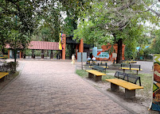

Meta Departamento de Colombia
Informacion📄
Meta es un departamento del centro de Colombia, que comprende el área desde los Andes al oeste, hasta las llanuras de Los Llanos. Su capital, Villavicencio, está rodeada de cerros y llanuras al noroeste. Es conocida por sus parques, el baile del joropo y el coleo.
Sitios Turisticos📌
-
Bioparque Los Ocarros

Ubicado en Villavicencio, el Bioparque Los Ocarros es una reserva natural única dedicada a la conservación y educación de la vida silvestre colombiana.
-
Parque Los Fundadores

El Parque Los Fundadores es el parque más grande de Villavicencio, Meta, abarca seis hectáreas y se encuentra en la entrada de la ciudad por la vía desde Bogotá. Este espacio cuenta con áreas verdes, senderos peatonales, una plaza central con un monumento dedicado a los fundadores de la ciudad.
-
Caño Cristales

Caño Cristales es un río de Colombia que está ubicado en la sierra de la Macarena, en el municipio del mismo nombre, en el departamento del Meta.
Economia📈
La economía del Meta se basa principalmente en los sectores petrolero (minería) y agropecuario, con la producción de arroz, maíz, soya, y la ganadería como pilares fundamentales. También es importante el comercio y los servicios, así como actividades de agroindustria y piscicultura. También es importante el comercio y los servicios, así como actividades de agroindustria y piscicultura.
Formacion ocupacional📋
-
Minería:
El Meta es el mayor productor de petróleo de Colombia, con los principales campos de explotación en Rubiales y Chichimene, constituyendo el 43% de la producción nacional, según datos de 2024-2025.
-
Ganadería:
La ganadería de extensión es una actividad fundamental en la región.
-
Pesca y Acuicultura:
La piscicultura, tanto en ríos como en estanques artificiales, contribuye a la economía, con la obtención de peces como el bagre, mojarra, bocachico y cachama.
Platos tipicos de meta🥩
-
Cachama y mojarra

Peces de río que se preparan de diversas formas, como "moqueado" o a la plancha.
-
Hayacas llaneras

Tamales preparados con garbanzos, carne, pollo y pasas.
-
Torta de gacho

Un pan dulce elaborado con harina de arroz, cuajada, huevos y bocadillo.